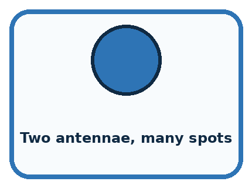
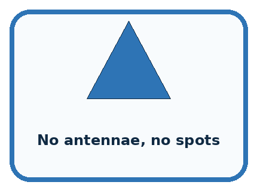
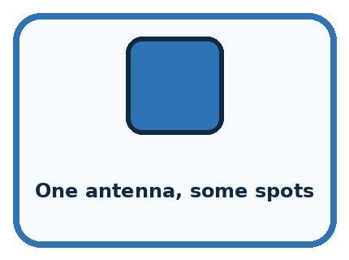

AI Academy · Level 1 · Grade 6 · Week 14 · Student lesson
Build a Human Classifier
Learn to understand, design, build, test and explain AI systems responsibly.
Project: Helpful Classroom Sorter
THE CONNECTED WEEK
Build the whole classifier, including rejection.
Give Tower1 an input contract, inspect worked RibbonR, operate a fictional creature classifier and construct a separate Ribbon1.
Keep one habit: Validate the record → predict only when accepted → retain the version and outcome.
Main lesson · Section 1
Can someone operate your classifier without guessing?
Validate the record before applying the selected rule, and keep rejection separate from a category.
Start with the whole procedure
You will act as the operator of a paper classifier for fictional measurements. A threshold is only one part of the procedure: you also need accepted inputs, a rejected-input path and a record of which model was intended.
Retrieve the missing-height question
A fitted rule predicts tall at a height of at least 6 cm and short otherwise. Predict at 5 and 6 cm. What should you check before applying it to a blank height?
Close your notes first. A rough first answer helps us choose the right starting point; it is not a score for your ability.
After trying, check the relevant lesson or ask your teacher. Change the part of your explanation that the evidence shows was wrong.
By the end, you can…
I can construct a classifier with a stated input format, selected rule and recorded output.
I can trace valid, boundary and invalid inputs through different paths.
I can distinguish an input check from evidence that a prediction is correct.
Earlier wording, alternatives and picture transcripts
Your learning target
Remember before reading
Without opening the old lesson, explain one key idea from Learning from Examples. Give an example and a mistake that the idea helps you avoid.
Without opening the old lesson, explain one key idea from Repeating Efficiently. Give an example and a mistake that the idea helps you avoid.
Without opening the old lesson, explain one key idea from Features: Useful Clues. Give an example and a mistake that the idea helps you avoid.
Classification maps features to a category using a decision boundary.

LEARNING TARGET A classroom rule labels anything with wings as a bird. Test a bat, a penguin and a toy aeroplane. Define the target independently, then propose a next step without pretending one visual clue solves biology.
Learner name:
Readiness for the connected explanation
This week’s end goal
By the end, I can build a complete classifier that validates inputs before predicting.
Main lesson · Section 2
Give Tower1 a complete input contract
The model uses the threshold selected in Week 13’s updated tower fit.
Identify Tower1 and where its rule came from
Your task is to build a paper classifier that another learner can operate without guessing your instructions. It will predict short or tall for imaginary towers.
Use the threshold of 6 centimetres selected after adding the height 5 short example in Week 13. Name this selected model Tower1.
State accepted records and endpoints
Write an input contract: one height recorded as a whole number of centimetres from 1 through 10, including both endpoints. Require the unit cm to be shown. This is a classroom design choice about what the procedure accepts.
It is not a claim that every accepted height appeared in fitting or that towers outside this range cannot exist.
Include the rejected-input path
A complete classifier needs instructions for checking the input, applying Tower1 when the input is accepted, and recording the outcome. It must also say what happens when the input fails a check.
The threshold alone does not provide these surrounding instructions.
Check the instructions another learner needs
Name the selected model, threshold, required unit and accepted range. Which instructions must still surround the threshold before another learner can operate the procedure?
Earlier wording, alternatives and picture transcripts
PICTURE STORY
Look Closely Before You Explain
Pictures give clues; evidence tells us what the clues mean.

MYSTERY Mystery creatures can be sorted using visible features such as antenna count and spot pattern, with the decision rule drawn on a feature map.
What do you notice?
Name three visible details without explaining them yet.
Circle the detail most connected to the system's decision.
Name one detail that may be decoration or distraction.
Make a first prediction and state the clue that supports it.
My observations, prediction, and evidence:
GOOD THINKING A prediction can change when stronger evidence appears.
A closer explanation
Main lesson · Section 3
Validate, stop if rejected, then predict
Record the model version even when its threshold was not reached.
Trace accepted and missing-height paths
Three records through the Tower1 classifier
Apply the input checks in order
For every record, first check that a height is present and its stated unit is cm. Then check that it is a whole number from 1 through 10.
If any check fails, record no prediction and the reason, then stop processing that record. Do not continue into the threshold comparison.
Predict only after every check passes
If all checks pass, compare the height with 6. At least 6 gives the prediction tall; otherwise give short. Record the original input, model version Tower1 and the prediction.
For a rejected record, record the original input, Tower1, no prediction and a reason. Tower1 identifies the intended model even when its threshold was not used.
Explain the stopping branch
Point to the input, the deciding step and the result in this week’s visual. Explain the same step in ordinary words. A picture helps when you can say what each part represents.
Earlier wording, alternatives and picture transcripts
VISUAL MECHANISM
Input → Process → Output
Follow the information instead of imagining magic inside the machine.


INPUT creature features
PROCESS compare the feature point with a boundary
OUTPUT category A, category B, or not sure
CORE IDEA Classification maps features to a category using a decision boundary.
UNDER THE HOOD A classifier partitions feature space into decision regions. A decision boundary is where the predicted category changes.
Different boundaries may fit the same training examples but behave differently on unseen or borderline inputs.
Draw a fresh example with all three stages:
A closer explanation
Connect the picture and the explanation
Main lesson · Section 4
Compare classifier inputs and decision clues
Keep a feature, the declared boundary and missing evidence distinguishable.
Pictures paired with their evidence


The case to investigate
CASE 1 — Two antennae, many spots Clue: far inside region A. Meaning: stable A prediction.


The case to investigate
CASE 2 — No antennae, no spots Clue: far inside region B. Meaning: stable B prediction.


The case to investigate
CASE 3 — One antenna, some spots Clue: near boundary. Meaning: uncertain.

Discuss the confusing pair
Which two pictures are easiest to confuse? What evidence separates them?
Keep the limit in view
BOUNDARY A drawn boundary describes the classifier's decision, not a natural law about the objects.
Earlier wording, alternatives and picture transcripts
PICTURE GALLERY
Four Cases, Four Clues
Use the visual cue, then read the evidence carefully.
CASE 1 — Two antennae, many spots Clue: far inside region A. Meaning: stable A prediction.
CASE 2 — No antennae, no spots Clue: far inside region B. Meaning: stable B prediction.
CASE 3 — One antenna, some spots Clue: near boundary. Meaning: uncertain.
CASE 4 — New wing feature Clue: not represented on map. Meaning: boundary may be incomplete.
Change one thing in the pictured case
Change: Provide length 9 with unit mm.
Prediction: Request clarification rather than predicting long.
Reason: RibbonR requires cm; the unit mismatch fails its declared input contract.
Main lesson · Section 6
RibbonR checks its contract before its boundary
This fixed instruction card accepts whole lengths 0–15 cm and predicts long at 9 cm or more.
The complete RibbonR card
A fictional ribbon sorter uses a fixed instruction card called RibbonR.
Valid input: whole-number length from 0 to 15 with unit cm.
Predict long at least 9 cm; otherwise short. Missing, wrong-unit or out-of-range values request clarification.
Trace validation, prediction and the saved record


Compare the stated outcomes


Explain why 16 is rejected while 0 is accepted
A prediction boundary answers a different question from input validation. Length 9 passes the contract and meets the long boundary.
Length 16 must not receive long merely because it exceeds 9: it violates the allowed range first. Zero is permitted and receives short.
Predict with the wrong unit
Before checking, supply the digits 9 with unit mm. Use RibbonR’s cm-only contract. Does the threshold comparison run? Explain the next action without silently changing units.
Check the unit-mismatch path


Keep validation separate from correctness
Contract validity does not prove the predicted category agrees with a checked reference label.
Explain 0 cm and clarification
Read the labelled picture: Trace 0 cm and explain why clarification is different from predicting short.
Earlier wording, alternatives and picture transcripts
WORKED EXAMPLE
Watch the Reasoning, Not Just the Answer
Every step connects a claim to observable evidence.

CASE Mystery creatures can be sorted using visible features such as antenna count and spot pattern, with the decision rule drawn on a feature map.
STEP 1 — OBSERVE creature features
STEP 2 — TRACE compare the feature point with a boundary
STEP 3 — CONCLUDE category A, category B, or not sure
MODEL REASONING Plot each creature by the selected features and draw a line or rule separating labeled examples. Cases near the line are sensitive to small changes and should receive careful review or a not-sure output.
DO NOT OVERCLAIM A drawn boundary describes the classifier's decision, not a natural law about the objects.
What new evidence could change this answer?
A closer explanation
| Input | Contract result | Outcome |
|---|---|---|
| 1 cm | Accepted at lower endpoint | Predict short |
| 9 cm | Accepted | Predict tall |
| 10 cm | Accepted at upper endpoint | Predict tall |
| 0 cm | Outside 1 through 10 | No prediction |
| 60 mm | Unit is not cm | No prediction |
| 4.5 cm | Not a whole number | No prediction |
A valid 9 cm input receives a tall prediction, but the input check does not establish that the prediction matches its comparison label. Validation checks the contract.
Evaluation checks predictions against appropriate evidence. Keep these questions separate.
Sixty millimetres equals six centimetres, but this version accepts cm records only. It does not contain a conversion step.
Ask for a correctly recorded cm measurement or deliberately design and check a conversion step in a new version. Do not silently treat the digits 60 as centimetres. A missing height must not become an invented zero either.
Learn from the worked case
Cover the result before checking it. Say what is given, choose the procedure, and follow one step at a time. Then uncover the result and explain your first mismatch. Ask why a step is allowed, not only what number it produces.
A pictorial worked case: Build a Human Classifier
The facts we will use


Read the picture one step at a time
Why this result follows
What this example does not establish
Change one thing: Provide length 9 with unit mm. Predict the result before checking the explanation. What remains the same?
Main lesson · Section 7
No prediction is a recorded system outcome
It is neither a hidden short prediction nor a decision about what a person must do.
Keep the later action separate
The classifier reports a prediction or no prediction. It does not decide what a person must do with a tower.
A separate classroom procedure might ask someone to remeasure a rejected input or compare a prediction with a recorded label. Write that action separately from the predicted category.
Retain rejected records in the system evidence
No prediction is not a third tower size. It records that this procedure did not assign short or tall.
Count and investigate such records when evaluating the whole system; hiding them could make a system look more useful than it is.
Repair the validation-equals-correctness claim
CLAIM A Anything on the same side must truly belong to that category.
CLAIM B Only one possible boundary can fit the examples.
STRONG ANSWER FRAME I claim ______ because the evidence shows ______. The process is ______. One limit is ______.
Earlier wording, alternatives and picture transcripts
COMPARE
Same Result, Different Reason
A comparison helps reveal the true concept boundary.
| Case | Evidence | What it shows |
|---|---|---|
| Two antennae, many spots | far inside region A | stable A prediction |
| No antennae, no spots | far inside region B | stable B prediction |
| One antenna, some spots | near boundary | uncertain |
| New wing feature | not represented on map | boundary may be incomplete |
Repair two tempting claims
Repair:
Repair:
A closer explanation
Main lesson · Section 8
Practise: hand the procedure to another operator
A partner should follow written branches and stop points without inventing missing instructions.
Construct and test Tower1
Write the procedure as numbered steps or connected boxes with labelled branches. Give it to a partner who follows only what you wrote.
The partner should record each check and stop point, including equality at the threshold and at both accepted range endpoints.
Keep instruction repairs distinct from model changes
A partner finding an unclear branch gives useful design feedback. Revise the instruction and retrace the affected examples.
Keep the model name and threshold visible so a change to the fitted rule is not confused with a correction to an instruction.
Use W2 to write both outcome paths
Use workbook W2 for the connected example “Constructing a classifier”. First fill the input and rule boxes. Try the middle steps before asking for a hint. After a hint, try the next step yourself.
| Plan | Do | Check |
|---|---|---|
| What is given? Which rule or procedure applies? | Record each intermediate step. | Does the result follow? What remains unknown? |
Explain your trace to a partner. Your partner points to one step to check. Swap roles on the next case. Each person writes their own explanation.
Challenge “every numeric input gets a category”
Use the worked case for Constructing a classifier. Proposed explanation: “Any numeric input must receive a category”. Decide whether this explanation is supported.
Point to the step or supplied fact that decides; explain your repair if needed.
Answer on your own before discussion. If you are unsure, say which step you need help with.
Return to RibbonR’s zero case
Trace 0 cm and explain why clarification is different from predicting short.
This is supported practice. Keep the separately named independent case for an attempt before feedback.
Earlier wording, alternatives and picture transcripts
GUIDED PRACTICE
Try It, Check It, Explain It
Use support now so you can succeed independently later.

Explain how the picture story demonstrates this idea: Classification maps features to a category using a decision boundary.
Use a fresh example to explain classifier.
Trace a new input → process → output example.
Find and repair the error in: Only one possible boundary can fit the examples.
Invent one edge case and name the safe response.
PARTNER CHECK Point to the evidence. Do not accept an answer that only repeats the vocabulary word.
A closer explanation
Practise with less help: Construct both outcome paths
Check your reasoning
Explain the picture
Main lesson · Section 9
Investigate a complete mystery-creature instruction card
Use a fictional count contract, an equality case and explicit rejected-input records.
The complete CreatureC policy
Use fictional creature cards with an antenna-count field. CreatureC accepts one whole-number count from 0 through 4. If missing, unreadable, fractional or outside that range, record NO PREDICTION with a reason and stop. Otherwise predict A when count is at least 2 and B otherwise. Record the original count, contract result, CreatureC and the prediction or reason. A and B are invented task labels.
Predict, operate and compare records
Predict and trace cards showing counts 1, 2, 5 and blank. Some pictures have stripes and others dots; pattern is not an input to this declared rule. Have a partner follow only your instruction card. Keep the invalid 5 case out of the threshold comparison, and explain why a valid A prediction still needs separate comparison evidence before claiming correctness.
Keep a normal case and an edge case clearly separated.
Record what happened—even when it does not match your prediction.
Explain the result, one limitation, and the next useful test.
Keep contract and prediction evidence separate
| Case | Prediction | Observed result | What it means |
|---|---|---|---|
| Normal | |||
| Edge |
Before trying: what do I expect, and why? While trying: which step could first go wrong? Afterwards: what did I actually observe, and what should change? Keep “not run” if you only traced the procedure.
Earlier wording, alternatives and picture transcripts
EXPLORER LAB
Mystery Creature Classifier
Predict first, test honestly, and explain what the evidence means.

State your prediction before the result is known.
Complete the task: Classify mystery creatures and make the boundary visible.
INDEPENDENCE After support is removed, repeat the proof with a fresh case.
Plan → try → check
Main lesson · Section 14
Try alone: construct the separate Ribbon1 classifier
Use Ribbon1’s own range 1–12 cm and long boundary 8; keep its name with every outcome.
The new input contract and requested traces
Design Ribbon1 for ribbon lengths recorded as whole centimetres from 1 through 12 inclusive, with unit cm required. Predict long at 8 cm or more and short otherwise.
Write complete instructions and trace 7 cm, 8 cm, a blank length and 13 cm. Include reasons for no prediction and the model version in each record.
Keep one first attempt
Attempt this case before feedback. Record any help. Earlier examples below are further practice; a case already practised with feedback cannot establish fresh transfer.
Your teacher has the independent answer and scoring criteria. Complete the matching workbook week to keep your practice evidence together.
Use feedback afterwards
Attempt the independent case before hints. Record whether you worked alone, used a hint or followed a model. After feedback, fix the first unsupported step and explain why it changed.
A later check uses a changed case, not a copied answer.
Earlier wording, alternatives and picture transcripts
Independent case: Build an independent ribbon classifier
Week 14 Independent application
Close the worked explanation. Apply the idea to this different question without copying.
Use a human classifier: three straight sides forming a closed shape means triangle; four equal straight sides and four right angles forming a closed shape means square. Classify a three-sided card and a card whose corner is hidden. When should you pause?
My answer, with a trace, calculation or supporting evidence
Create and test
Change one relevant detail. Predict the result before testing. Include a boundary or missing-information case when it helps reveal a limit.
My changed input and expected result
Connect to your project
Make the sorter's current decision boundary visible as a rule chart or feature map.
The evidence I will keep
Transfer practice from the original programme
A classroom rule labels anything with wings as a bird. Test a bat, a penguin and a toy aeroplane. Define the target independently, then propose a next step without pretending one visual clue solves biology.
Use feedback to improve
Main lesson · Section 11
Write the complete sorter instruction card
Include accepted formats, the prediction rule, rejection reasons and who resolves clarification requests.
This week’s project decision
THIS WEEK'S CHECKPOINT Make the sorter's current decision boundary visible as a rule chart or feature map.
Create a sorter instruction card covering valid values, equality, missing fields and who can resolve clarification requests.
Plan input checks, tests and review
What real classroom need does this serve?
What information is necessary—and what should stay private?
What happens inside the process?
What normal and edge cases will you test?
When should it say not sure or ask a person?
Keep the decision boundary’s meaning limited
RESPONSIBLE DESIGN A drawn boundary describes the classifier's decision, not a natural law about the objects.
Earlier wording, alternatives and picture transcripts
PROJECT
Helpful Classroom Sorter
Build one coherent system across the year, one evidence-based decision at a time.


My project decision:
Evidence for your project
Main lesson · Section 16
Finish: distinguish validation from evaluation
Close your notes and explain an accepted input, a rejected input and the remaining correctness question.
Your exit explanation
Close your notes. Explain this goal in your own words: Construct a classifier with a stated input format, selected rule and recorded output
Choose support and revisit later
If you are unsure, return to the worked picture and explain one arrow. If you are ready, change an input or assumption and justify your prediction.
Save your workbook evidence. At the next review, try a different case before opening your old answer.
Reference bank and extra practice
Choose the reference that helps your next step.
Your quick word guide
Reference · Section 5
Your quick word guide
Use the words to explain a particular step, record or limit.
Core vocabulary
| Word | Meaning | My example |
|---|---|---|
| classifier | process that predicts a category | |
| feature space | map whose positions represent feature values | |
| decision boundary | place where predicted class changes | |
| borderline case | input near or across competing regions |
Terms for the connected explanation
| Word | Meaning |
|---|---|
| Input contract | The format and conditions an input must satisfy for a procedure to accept it |
| Validation | Checking whether an input satisfies the stated contract |
| No prediction | An explicit outcome when the classifier does not assign a category |
| Model version | A name that identifies the particular model used for a prediction |
Repair a claim using a word
CLAIM TO REPAIR Anything on the same side must truly belong to that category.
Use one vocabulary word and one piece of evidence to repair it:
Earlier wording, alternatives and picture transcripts
VOCABULARY
Words You Can See and Use
The badge is a memory cue; the definition does the real thinking work.


Misconception detective
WORD POWER A strong definition helps you decide something in a new case.
Words used in the closer explanation
Choose a stronger thinking challenge
Reference · Section 10
Choose a stronger thinking challenge
Choose the next useful challenge rather than treating the whole ladder as compulsory.
Pick your next step
RECALL Define classifier.
EXPLAIN Classification maps features to a category using a decision boundary.
TRACE Show the input, process, and output.
DIAGNOSE Repair: Anything on the same side must truly belong to that category.
TRANSFER Apply the idea to a new home or classroom case.
CREATE Design one revealing test.
DEFEND Give a claim, evidence, mechanism, limit, and safe action.
Earlier wording, alternatives and picture transcripts
PRACTICE LADDER
Climb from Recall to Defense
Each step asks for a stronger kind of understanding.

RETRY RULE A coached answer becomes mastery only after you solve a different case independently.
Reference: check your explanation
Reference · Section 12
Reference: check your explanation
Use after practice. Build an independent ribbon classifier is the selected independent case.
Check the evidence and its limit
□ Name or draw the fresh case.
□ Trace input, process, and output.
□ State the conclusion and strongest evidence.
□ Name one limit, failure, missing clue, or fairness/privacy concern.
□ Explain one safe next action or improvement.
Record support
My level: □ Not yet □ With one hint □ Independently □ I can teach it
Earlier wording, alternatives and picture transcripts
MASTERY
Checklist for explaining this week’s idea
Use after practice. Build an independent ribbon classifier is the selected independent case.

EXPLANATION CHECK Validate against the stated contract, stop rejected records, retain the model version and distinguish input acceptance from evidence of a correct prediction.
Independent evidence:
SELF-CHECK Plot each creature by the selected features and draw a line or rule separating labeled examples. Cases near the line are sensitive to small changes and should receive careful review or a not-sure output.
NEXT BRIDGE Carry today's evidence habit into: Save New Examples for Testing.
Extra practice: Does the object have wheels?
Reference · Section 13
Extra practice: Does the object have wheels?
Try the question before opening its worked explanation.
Read the supplied case and question
A human classifier uses has wheels means vehicle on a bicycle, wheelchair, toy car and boat.
Apply the rule and identify a limitation.
Your explanation
Which detail supports the answer, and why does it matter?
Check after trying
The first three receive vehicle; the boat does not. If the intended category includes boats, the rule misses them. Define the category independently of the prediction rule.
| Evidence or stage | Value or result |
|---|---|
| Bicycle | Yes → vehicle |
| Wheelchair | Yes → vehicle |
| Toy car | Yes → vehicle |
| Boat | No → excluded by this rule |
Earlier wording, alternatives and picture transcripts
Week 14 Worked case
Use the supplied details to practise the weekly concept before attempting the independent question. This case extends the illustrated lesson.
The situation
The question
Worked explanation
Explain it in your own words
Trace the supplied case visually
Does the object have wheels?
A human classifier uses has wheels means vehicle on a bicycle, wheelchair, toy car and boat.
Apply the rule and identify a limitation.
The first three receive vehicle; the boat does not. If the intended category includes boats, the rule misses them. Define the category independently of the prediction rule.
Reference: original lesson checklist
Reference · Section 15
Reference: original lesson checklist
Use an additional checklist when it helps inspect your explanation.
Targets and evidence
| By the end, I can | How I will show it |
|---|---|
| Construct a classifier with a stated input format, selected rule and recorded output | Explain the deciding step, show a trace or test, and state one limit. |
| Trace valid, boundary and invalid inputs through different paths | Explain the deciding step, show a trace or test, and state one limit. |
| Distinguish an input check from evidence that a prediction is correct | Explain the deciding step, show a trace or test, and state one limit. |
Keep your route and first prediction
Remember → watch and explain → try with help → investigate → try independently → keep project evidence. Your teacher may spread this lesson across several classes.
Keep your first prediction. Compare it with what the evidence shows and explain any change.
Earlier wording, alternatives and picture transcripts
Start with this question: A fictional ribbon sorter uses a fixed instruction card called RibbonR.
Extra practice: pictures, repair and feedback
Reference · Section 17
Extra practice: pictures, repair and feedback
Attempt each question before opening its explanation. Use one browser or paper copy.
First supported question
A fictional ribbon sorter uses a fixed instruction card called RibbonR.
Which labelled step matches this detail? Store input, contract result, rule version and prediction.
1. Invalid cases
2. Input contract
3. Keep records
4. Valid cases
Hint if needed: Read the steps in the pictorial case. Match the supplied detail to the stage that performs or records it.
Practice 1: explain the deciding evidence
Check the first explanation
After your attempt, compare with the supported explanation: Keep records Store input, contract result, rule version and prediction. A prediction boundary answers a different question from input validation.
Length 9 passes the contract and meets the long boundary. Length 16 must not receive long merely because it exceeds 9: it violates the allowed range first. Zero is permitted and receives short.
Changed-case question
Changed-case practice: Provide length 9 with unit mm. Which conclusion is supported by the supplied facts?
1. Request clarification rather than predicting long.
2. This one example guarantees correct results for every future input.
3. We can decide the result without examining the changed input or the procedure.
Hint if needed: Use the changed condition and the deciding step in the pictorial trace. The answer must say what follows from those facts.
Practice 2: explain the deciding evidence
Check the changed case
After your attempt, compare with the supported explanation: Request clarification rather than predicting long. RibbonR requires cm; the unit mismatch fails its declared input contract.
Repair and save your work
Review Learning from Examples (ai-1/13). Goal: Fit a threshold by tracing predictions and counting disagreements for every candidate. Short practice: Which new measured length would reveal disagreement between the candidates?.
Return to this week and explain what you changed.
Review Repeating Efficiently (ai-1/11). Goal: Trace a loop by testing its condition before every repetition. Short practice: Trace a fresh start of 9. How many additions occur, and must the report equal 10?.
Return to this week and explain what you changed.
Review Features: Useful Clues (ai-1/8). Goal: Choose recorded properties that preserve distinctions needed for a stated task.
Short practice: Point to the pair that tests pattern, then explain why the sticker is a bad early input.. Return to this week and explain what you changed.
Use Download completed work in the hosted lesson to export your answers, reflections, practice feedback and code-run evidence. Open the HTML copy to read or print it.
Drafts stay in this browser when storage is available; clear drafts on a shared device.
Earlier wording, alternatives and picture transcripts
Use this supported practice once, in the browser or on paper. Keep the reserved independent assessment for a separate first attempt before teacher feedback.
Repair a missing building block
Keep your completed work
Reference: the six-picture journey
Reference · Section 18
Reference: the six-picture journey
Revisit the picture that serves the current question; key diagrams already sit beside the main explanation.
01. Build a Human Classifier: the case


A fictional ribbon sorter uses a fixed instruction card called RibbonR. Supplied facts: Valid input: whole-number length from 0 to 15 with unit cm. Predict long at least 9 cm; otherwise short.
Missing, wrong-unit or out-of-range values request clarification.
Point to the given fact that matters most. Explain why it matters.
02. Follow the deciding steps
Input contract: Check that length is present, whole, within 0–15, and in cm. → Valid cases: 8 cm → short; 9 cm → long. → Invalid cases: 16 cm and blank length → clarification, not a forced label. → Keep records: Store input, contract result, rule version and prediction.
Point to each numbered stage and explain which recorded input it uses.
03. Three records through the Tower1 classifier
Three records through the Tower1 classifier. 5 cm | Accepted; 5 is below 6 | Tower1 predicts short. 6 cm | Accepted; 6 is at least 6 | Tower1 predicts tall.
Height blank | Missing height; stop before rule | Tower1; no prediction
Read the labels and values. Explain the relationship the model shows.
04. Change one thing. Trace what follows.
Original case: Store input, contract result, rule version and prediction. Changed condition: Provide length 9 with unit mm. Expected result: Request clarification rather than predicting long.
Reason: RibbonR requires cm; the unit mismatch fails its declared input contract.
Predict before checking the worked changed-case result. Name what changed and what the supplied facts allow you to conclude.
05. Connect the explanation to its limit


A prediction boundary answers a different question from input validation. Length 9 passes the contract and meets the long boundary.
Length 16 must not receive long merely because it exceeds 9: it violates the allowed range first. Zero is permitted and receives short.
Limit: Contract validity does not prove the predicted category agrees with a checked reference label.
Explain the case, then point to a limit on the claim.
06. Make the idea visible in your project


Create a sorter instruction card covering valid values, equality, missing fields and who can resolve clarification requests. Draw your input, deciding step, result and limit.
Supported question: Trace 0 cm and explain why clarification is different from predicting short.
Draw your project trace and justify the deciding step using evidence.